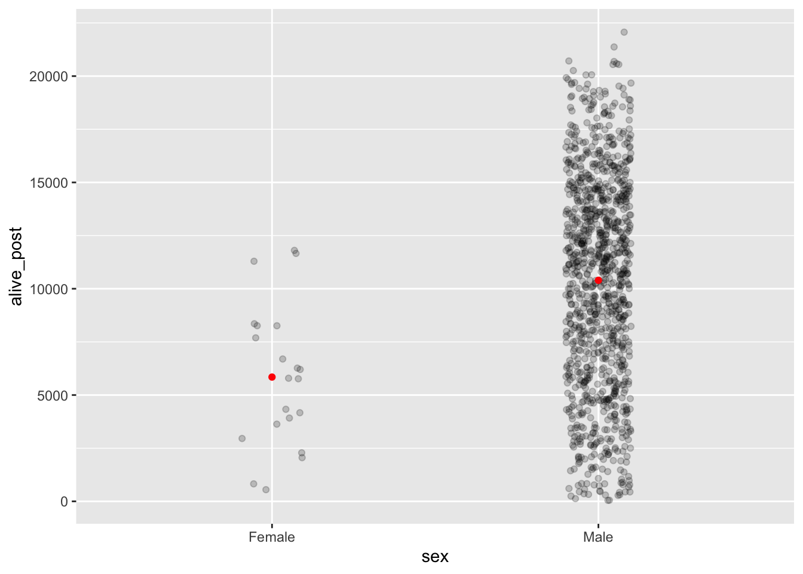
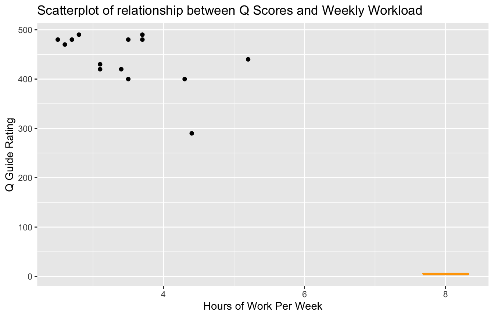
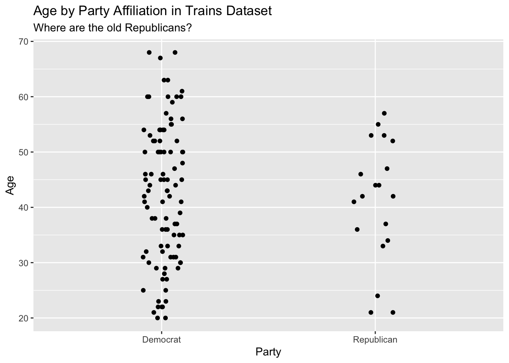

Chapter 7 Two Parameters
What is the average height of an American male? What is the 90th percentile of the distribution of height for American men? How certain are you are your estimates? If we pass 5 men walking down the street, what are the odds that the tallest will be at least 5 centimeters taller than the shortest?
7.1 Pennies example
In Chapter 6, we studied sampling. We started with a “tactile” exercise where we wanted to know the proportion of balls in the urn that are red. While we could have performed an exhaustive count, this would have been a tedious process. So instead, we used a shovel to extract a sample of 50 balls and used the resulting proportion that were red as an estimate. Furthermore, we made sure to mix the urn’s contents before every use of the shovel. Because of the randomness created by the mixing, different uses of the shovel yielded different proportions red and hence different estimates of the proportion of the urn’s balls that are red.
Remember: There is a truth here. There is an urn. It has red and white balls in it. An exact, but unknown, number of the balls are red. An exact, but unknown, number of the balls are white. An exact, but unknown, percentage of the balls are red – defined as the number red divided by the sum of the number red and the number white. Our goal was to estimate that unknown percentage. We wanted to make statements about the world, even if we can never be certain that those statements are true. We will never have the time or inclination to actually count all the balls. We use the term parameter for things that exist but which are unknown. We use statistics to estimate the true values of parameters.
We then mimicked this physical sampling exercise with an equivalent virtual sampling exercise using the computer. In Subsection 6.2.4, we repeated this sampling procedure 1,000 times, using three different virtual shovels with 25, 50, and 100 slots. We visualized these three sets of 1,000 estimates in Chapter 6 and saw that as the sample size increased, the variation in the estimates decreased. We then expanded this for all sample sizes from 1 to 100.
In doing so, we constructed sampling distributions. The motivation for taking a 1,000 repeated samples and visualizing the resulting estimates was to study how these estimates varied from one sample to another; in other words, we wanted to study the effect of sampling variation. We quantified the variation of these estimates using their standard deviation, which has a special name: the standard error. In particular, we saw that as the sample size increased from 1 to 100, the standard error decreased and thus the sampling distributions narrowed. Larger sample sizes led to more precise estimates that varied less around the center.
We then tied these sampling exercises to terminology and mathematical notation related to sampling in Subsection 6.3.1. Our study population was the large urn with \(N\) = 2,400 balls, while the population parameter, the unknown quantity of interest, was the population proportion \(p\) of the urn’s balls that were red. Since performing a census would be expensive in terms of time and energy, we instead extracted a sample of size \(n\) = 50. The point estimate, also known as a sample statistic, used to estimate \(p\) was the sample proportion \(\hat{p}\) of these 50 sampled balls that were red. Furthermore, since the sample was obtained at random, it can be considered as unbiased and as representative of the population. Thus any results based on the sample could be generalized to the population. Therefore, the proportion of the shovel’s balls that were red was a “good guess” of the proportion of the urn’s balls that are red. In other words, we used the sample to draw inferences about the population.
However, as described in Section 6.2, both the physical and virtual sampling exercises are not what one would do in real life. This was merely an activity used to study the effects of sampling variation. In a real life situation, we would not take 1,000 samples of size \(n\), but rather take a single representative sample that’s as large as possible. Additionally, we knew that the true proportion of the urn’s balls that were red was 37.5%. In a real-life situation, we will not know what this value is. Because if we did, then why would we take a sample to estimate it?
An example of a realistic sampling situation would be a poll, like the Obama poll you saw in Section 6.4. Pollsters did not know the true proportion of all young Americans who supported President Obama in 2013, and thus they took a single sample of size \(n\) = 2,089 young Americans to estimate this value.
So how does one quantify the effects of sampling variation when you only have a single sample to work with? You cannot directly study the effects of sampling variation when you only have one sample. One common method to study this is bootstrap resampling, or simply bootstrapping.
What if we want, not only a single estimate of the unknown population parameter, but also a range of highly plausible values? Going back to the Obama poll article, it stated that the pollsters’ estimate of the proportion of all young Americans who supported President Obama was 41%. But in addition it stated that the poll’s “margin of error was plus or minus 2.1 percentage points.” This “plausible range” was [41% - 2.1%, 41% + 2.1%] = [38.9%, 43.1%]. This range of plausible values is what’s known as a confidence interval, which will be the focus of the later sections of this chapter. In Bayesian terms, we want the posterior distribution of the unknown parameter \(p\), the proportion of young Americans who supported Obama.
7.1.1 To the Bank
As we did in Chapter 6, we’ll begin with a hands-on tactile activity. We almost always need the tidyverse package.
library(PPBDS.data)
library(rsample)
library(tidyverse)
library(skimr)
library(rstanarm)
library(gtsummary)
library(tidybayes)PPBDS.data includes the data sets for this book. rsample includes functions for bootstrapping. rstanarm, gtsummary and tidybayes make it easy to create and display Bayesian models.
7.1.2 What was the average year of US pennies in 2019?
Try to imagine all the pennies being used in the United States in 2019. That’s a lot of pennies! Now say we’re interested in the average year of minting of all these pennies. One way to compute this value would be to gather up all pennies being used in the US, record the year, and compute the average. However, this would be near impossible! So instead, let’s collect a sample of 50 pennies from a local bank in downtown Northampton, Massachusetts, USA as seen in the photo below
FIGURE 7.1: Collecting a sample of 50 US pennies from a local bank.

FIGURE 7.2: Collecting a sample of 50 US pennies from a local bank.

An image of these 50 pennies can be seen in below. For each of the 50 pennies starting in the top left, progressing row-by-row, and ending in the bottom right, note there is an “ID” identification variable printed in black and the year of minting printed in white.
FIGURE 7.3: 50 US pennies labelled.

Run the pennies_sample code below to extract our 50 sampled pennies.
pennies_sample <- tibble(ID = c(1:50),
year = c(2002, 1986, 2017, 1988, 2008, 1983, 2008,
1996, 2004, 2000, 1994, 1995, 2015, 1978,
1974, 2015, 2016, 1996, 1983, 1971, 1981,
1976, 1998, 2017, 1979, 1979, 1993, 2006,
1988, 1978, 2013, 1976, 1979, 1985, 1985,
2015, 1962, 1999, 2015, 1990, 1992, 1997,
2018, 2015, 1997, 2017, 1982, 1988, 2006,
2017))
pennies_sample## # A tibble: 50 x 2
## ID year
## <int> <dbl>
## 1 1 2002
## 2 2 1986
## 3 3 2017
## 4 4 1988
## 5 5 2008
## 6 6 1983
## 7 7 2008
## 8 8 1996
## 9 9 2004
## 10 10 2000
## # … with 40 more rowsThe pennies_sample data frame has 50 rows corresponding to each penny with two variables. The first variable ID corresponds to the ID labels in our table above, whereas the second variable year corresponds to the year of minting saved as a numeric variable, also known as a double (dbl).
Based on these 50 sampled pennies, what can we say about all US pennies in 2019? Let’s study some properties of our sample by performing an exploratory data analysis. Let’s first visualize the distribution of the year of these 50 pennies using our data visualization tools from before. Since year is a numerical variable, we use a histogram to visualize its distribution.
FIGURE 7.4: Distribution of year on 50 US pennies.
Observe a slightly left-skewed distribution, since most pennies fall between 1980 and 2010 with only a few pennies older than 1970. What is the average year for the 50 sampled pennies? Eyeballing the histogram it appears to be around 1990. Let’s now compute this value exactly using our data wrangling tools from Chapter 2.
## # A tibble: 1 x 1
## mean_year
## <dbl>
## 1 1995.Thus, if we’re willing to assume that pennies_sample is a representative sample from all US pennies, a “good guess” of the average year of minting of all US pennies would be 1995.44. In other words, around 1995. This should all start sounding similar to what we did previously in Chapter 6!
In Chapter 6, our study population was the urn of \(N\) = 2400 balls. Our population parameter was the population proportion of these balls that were red, denoted by \(p\). In order to estimate \(p\), we extracted a sample of 50 balls using the shovel. We then computed the relevant point estimate: the sample proportion of these 50 balls that were red, denoted mathematically by \(\hat{p}\).
Here our population is \(N\) = whatever the number of pennies are being used in the US, a value which we don’t know and probably never will. The population parameter of interest is now the population mean year of all these pennies, a value denoted mathematically by the Greek letter \(\mu\) (pronounced “mu”). In order to estimate \(\mu\), we went to the bank and obtained a sample of 50 pennies and computed the relevant point estimate: the sample mean year of these 50 pennies, denoted mathematically by \(\overline{x}\) (pronounced “x-bar”). An alternative and more intuitive notation for the sample mean is \(\hat{\mu}\). However, this is unfortunately not as commonly used.
We summarize the correspondence between the sampling urn exercise in Chapter 6 and our pennies exercise in Table below.
| Scenario | Population_parameter | Notation | Point_Estimate | Symbol |
|---|---|---|---|---|
1 |
Population Proportion |
$$p$$ |
Sample Proportion |
$$\hat{p}$$ |
2 |
Population mean |
$$\mu $$ |
Sample mean |
$$\overline{x}$$ or $$\hat{\mu}$$ |
3 |
Difference in population proportions |
$$p_1 - p_2$$ |
Difference in sample proportions |
$$\hat{p}_1 - \hat{p}_2$$ |
4 |
Difference in population means |
$$\mu_1 - \mu_2$$ |
Difference in sample means |
$$\overline{x}_1 - \overline{x}_2$$ |
Going back to our 50 sampled pennies, the point estimate of interest is the sample mean \(\overline{x}\) of 1995.44. This quantity is an estimate of the population mean year of all US pennies \(\mu\).
Recall that we also saw in Chapter 6 that such estimates are prone to sampling variation. For example, in this particular sample, we observed three pennies with the year 1999. If we sampled another 50 pennies, would we observe exactly three pennies with the year 1999 again? More than likely not. We might observe none, one, two, or maybe even all 50! The same can be said for the other 26 unique years that are represented in our sample of 50 pennies.
So what do we do about this sampling variation? One solution is that we create bootstrap samples! Bootstrapping repeatedly draws independent samples from our data set with replacement. By sampling with replacement, the same observation can be sampled multiple times and each bootstrap sample will have the same number of observations as the original data set.
To conduct bootstraps, make sure you install both rsample and tidyverse libraries
The intuition with bootstrapping is that we can model an inference about the population from resampling our sample data and then performing an inference about a sample from each resample. It will look something like this: resampled → sample → population.
The first thing we want to do when bootstrapping is to create our bootstrap samples. Since we are concerned with the year of pennies in 2019, let’s select year in our data set before we create our bootstraps. Let’s now perform the virtual analog for 1000 resamples. Using these results, we’ll be able to study the variability in the sample means from 1000 resamples of size 50. Let’s first add a times = 1000 argument to bootstraps() to indicate we would like 1000 replicates. Remember that we must use the rsample library to use bootstraps.
set.seed(9)
virtual_resamples <- pennies_sample %>%
select(year) %>%
bootstraps(times = 1000)
virtual_resamples## # Bootstrap sampling
## # A tibble: 1,000 x 2
## splits id
## <list> <chr>
## 1 <split [50/19]> Bootstrap0001
## 2 <split [50/20]> Bootstrap0002
## 3 <split [50/16]> Bootstrap0003
## 4 <split [50/18]> Bootstrap0004
## 5 <split [50/18]> Bootstrap0005
## 6 <split [50/18]> Bootstrap0006
## 7 <split [50/17]> Bootstrap0007
## 8 <split [50/14]> Bootstrap0008
## 9 <split [50/19]> Bootstrap0009
## 10 <split [50/20]> Bootstrap0010
## # … with 990 more rowsOur bootstrap samples are stored in a tibble-like object, with each bootstrap sample nested in the splits column. Each row is a different bootstrap sample and the id column is used to identify each bootstrap sample.
Check out ?analysis in the Console to get an even more comprehensive review of what analysis() does
Tto view a specific bootstrap sample, use the analysis() function from the rsample package, which basically allows you to view a specific bootstrap sample as a data frame. To do so, type analysis(virtual_resamples$splits[[n]]) %>% as_tibble() with n as the nth row bootstrap sample. Consider the first bootstrap sample:
## # A tibble: 50 x 1
## year
## <dbl>
## 1 1983
## 2 2017
## 3 1983
## 4 2017
## 5 1995
## 6 1988
## 7 1978
## 8 2015
## 9 1962
## 10 1996
## # … with 40 more rowsNotice that it has 50 rows, which is the same as the number of rows in our pennies_sample. Now that we know how to create bootstrap samples and view them, we can apply more code to our bootstraps to find our desired statistic, which is the average year of pennies in 2019.
In this chapter, bootstrap samples and resamples mean the same thing
To compute our desired statistics, we now create the column boot.
virtual_resamples <- pennies_sample %>%
select(year) %>%
bootstraps(times = 1000) %>%
mutate(boot = map(splits, ~ analysis(.)))
virtual_resamples## # Bootstrap sampling
## # A tibble: 1,000 x 3
## splits id boot
## <list> <chr> <list>
## 1 <split [50/19]> Bootstrap0001 <tibble [50 × 1]>
## 2 <split [50/18]> Bootstrap0002 <tibble [50 × 1]>
## 3 <split [50/20]> Bootstrap0003 <tibble [50 × 1]>
## 4 <split [50/18]> Bootstrap0004 <tibble [50 × 1]>
## 5 <split [50/19]> Bootstrap0005 <tibble [50 × 1]>
## 6 <split [50/15]> Bootstrap0006 <tibble [50 × 1]>
## 7 <split [50/13]> Bootstrap0007 <tibble [50 × 1]>
## 8 <split [50/19]> Bootstrap0008 <tibble [50 × 1]>
## 9 <split [50/20]> Bootstrap0009 <tibble [50 × 1]>
## 10 <split [50/19]> Bootstrap0010 <tibble [50 × 1]>
## # … with 990 more rowsWe are iterating over each bootstrap sample, applying analysis() to each row. boot is now a list-column in the tibble, which we can use if we want to find a specific characteristic of each sample like the average year. Given that boot is a list column and we want to pull out the mean year as we are interested in this, we can create two more columns:
set.seed(9)
virtual_resamples <- pennies_sample %>%
select(year) %>%
bootstraps(times = 1000) %>%
mutate(boot = map(splits, ~ analysis(.))) %>%
mutate(years = map(boot, ~ pull(., year))) %>%
mutate(year_mean = map_dbl(years, ~ mean(.)))
virtual_resamples## # Bootstrap sampling
## # A tibble: 1,000 x 5
## splits id boot years year_mean
## <list> <chr> <list> <list> <dbl>
## 1 <split [50/19]> Bootstrap0001 <tibble [50 × 1]> <dbl [50]> 1992.
## 2 <split [50/20]> Bootstrap0002 <tibble [50 × 1]> <dbl [50]> 1999.
## 3 <split [50/16]> Bootstrap0003 <tibble [50 × 1]> <dbl [50]> 1992.
## 4 <split [50/18]> Bootstrap0004 <tibble [50 × 1]> <dbl [50]> 1993.
## 5 <split [50/18]> Bootstrap0005 <tibble [50 × 1]> <dbl [50]> 1995.
## 6 <split [50/18]> Bootstrap0006 <tibble [50 × 1]> <dbl [50]> 1998.
## 7 <split [50/17]> Bootstrap0007 <tibble [50 × 1]> <dbl [50]> 1993.
## 8 <split [50/14]> Bootstrap0008 <tibble [50 × 1]> <dbl [50]> 1995.
## 9 <split [50/19]> Bootstrap0009 <tibble [50 × 1]> <dbl [50]> 1993.
## 10 <split [50/20]> Bootstrap0010 <tibble [50 × 1]> <dbl [50]> 2000.
## # … with 990 more rowsVoila! We were able to create a thousand bootstrap samples and calculate the mean year for each resample. Let’s now create a plot to visualizes the posterior distribution for the mean year of American pennies in 2019.
virtual_resamples %>%
ggplot() +
geom_histogram(aes(x = year_mean,
y = ..count../sum(..count..)),
binwidth = .5) +
labs(x = "Mean Year",
y = "Probability",
title = "Posterior Distribution for the Mean Year of American Pennies in 2019") 
How did we sneak in the word “posterior” into this discussion. Recall in Chapter 5 that we defined a posterior distribution as our beliefs about an unknown value or parameter. In the case of the bootstrap samples we made, the posterior distribution represents our knowledge about the mean year of American pennies in 2019 after taking into account the the data we gathered from our bootstrap sample means. As demonstrated in the plot above, we can see that the mean year of pennies in 2019 is most likely between 1992 and 1998.
Have we proved how the bootstrap, almost magically, can create a reasonable posterior? Not at all! The mathematics of that proof are beyond the scope of this book.
7.2 EDA for nhanes
Run ?nhanes to get more information about the data from nhanes
Shifting away from dealing with pennies, let’s look at bootstrap modeling with the nhanes dataset from National Health and Nutrition Examination Survey conducted by the Centers for Disease Control and Prevention and covering children and adults in America.
Load the libraries we need:
library(PPBDS.data)
library(tidyverse)
library(broom)
library(rsample)
library(skimr)
library(tidyverse)## Rows: 10,000
## Columns: 15
## $ survey <int> 2009, 2009, 2009, 2009, 2009, 2009, 2009, 2009, 2009, …
## $ gender <chr> "Male", "Male", "Male", "Male", "Female", "Male", "Mal…
## $ age <int> 34, 34, 34, 4, 49, 9, 8, 45, 45, 45, 66, 58, 54, 10, 5…
## $ race <chr> "White", "White", "White", "Other", "White", "White", …
## $ education <ord> High School, High School, High School, NA, Some Colleg…
## $ hh_income <ord> 25000-34999, 25000-34999, 25000-34999, 20000-24999, 35…
## $ weight <dbl> 87, 87, 87, 17, 87, 30, 35, 76, 76, 76, 68, 78, 75, 39…
## $ height <dbl> 165, 165, 165, 105, 168, 133, 131, 167, 167, 167, 170,…
## $ bmi <dbl> 32, 32, 32, 15, 31, 17, 21, 27, 27, 27, 24, 24, 26, 19…
## $ pulse <int> 70, 70, 70, NA, 86, 82, 72, 62, 62, 62, 60, 62, 76, 80…
## $ diabetes <int> 0, 0, 0, 0, 0, 0, 0, 0, 0, 0, 0, 0, 0, 0, 0, 0, 0, 0, …
## $ general_health <int> 3, 3, 3, NA, 3, NA, NA, 4, 4, 4, 4, 4, 2, NA, NA, 3, N…
## $ depressed <ord> Several, Several, Several, NA, Several, NA, NA, None, …
## $ pregnancies <int> NA, NA, NA, NA, 2, NA, NA, 1, 1, 1, NA, NA, NA, NA, NA…
## $ sleep <int> 4, 4, 4, NA, 8, NA, NA, 8, 8, 8, 7, 5, 4, NA, 5, 7, NA…glimpse() is a really cool function to use to get a quick peek at your data. It basically allows your data to be viewed running across rows. We see that nhanes has data on a diverse array of things like physical attributes, education, and sleep.
Let’s restrict our attention to a subset, focusing on gender, height and the year of the survey.
Look at a random sample of our data:
## # A tibble: 5 x 4
## age gender height survey
## <int> <chr> <dbl> <int>
## 1 80 Female 157. 2009
## 2 0 Female NA 2009
## 3 19 Female 161. 2011
## 4 39 Male 175 2009
## 5 24 Female 159. 2009Notice how there is a decimal in the height column of ch7. This is because height is a <dbl> and not an <int>.
Let’s also run glimpse() on our new data.
## Rows: 10,000
## Columns: 4
## $ age <int> 34, 34, 34, 4, 49, 9, 8, 45, 45, 45, 66, 58, 54, 10, 58, 50, 9…
## $ gender <chr> "Male", "Male", "Male", "Male", "Female", "Male", "Male", "Fem…
## $ height <dbl> 165, 165, 165, 105, 168, 133, 131, 167, 167, 167, 170, 182, 16…
## $ survey <int> 2009, 2009, 2009, 2009, 2009, 2009, 2009, 2009, 2009, 2009, 20…Be on the lookout for anything suspicious. Are there any NA’s in your data set? What types of data are the columns, i.e. why is survey characterized as integer instead of double? Was most of the data collected in 2009? Are there more females than males? You can never look at your data too closely.
In addition to glimpse(), we can runskim(), from the skimr package, to calculate some summary statistics.
TABLE 7.1: Data summary
| Name | Piped data |
| Number of rows | 10000 |
| Number of columns | 4 |
| _______________________ | |
| Column type frequency: | |
| character | 1 |
| numeric | 3 |
| ________________________ | |
| Group variables | None |
Variable type: character
| skim_variable | n_missing | complete_rate | min | max | empty | n_unique | whitespace |
|---|---|---|---|---|---|---|---|
| gender | 0 | 1 | 4 | 6 | 0 | 2 | 0 |
Variable type: numeric
| skim_variable | n_missing | complete_rate | mean | sd | p0 | p25 | p50 | p75 | p100 | hist |
|---|---|---|---|---|---|---|---|---|---|---|
| age | 0 | 1.00 | 37 | 22 | 0 | 17 | 36 | 54 | 80 | ▇▇▇▆▅ |
| height | 353 | 0.96 | 162 | 20 | 84 | 157 | 166 | 174 | 200 | ▁▁▁▇▂ |
| survey | 0 | 1.00 | 2010 | 1 | 2009 | 2009 | 2010 | 2011 | 2011 | ▇▁▁▁▇ |
Interesting! There are 353 missing values of height in our subset of data. Just using glimpse() does not show us that. Let’s filter out the NA’s using drop_na. This we will delete the rows in which the value of any variable is missing. For simplicity, let’s only consider adults.
Plot your data.
ch7 %>%
ggplot(aes(x = height, color = gender)) +
geom_density() +
labs(x = "Height",
title = "Height by Gender in Nhanes Dataset")
The plot shows some interesting stuff. Since the distributions of height for both genders are skewed left, we can infer that this data set included children and thus age played a role in our data. Additionally, we can see the the most probable heights for both genders and that men are generally taller than women.
7.3 Bootstrap to estimate average height
We have shown you how to use bootstrap sampling to create a posterior distribution for an unknown parameter. Let’s use a similar approach to estimate the value of a different unknown parameter: the average height of an adult American male in 2009.
First, filter the data set:
ch7_male <- nhanes %>%
filter(survey == 2009, gender == "Male", age >= 18) %>%
select(height) %>%
drop_na()Dropping missing values can be dangerous, depending on their origin and the goals of our analysis. Never delete lightly.
Second, use (almost) the same code as before:
set.seed(9)
virtual_resamples <- ch7_male %>%
bootstraps(times = 1000) %>%
mutate(boot = map(splits, ~ analysis(.))) %>%
mutate(heights = map(boot, ~ pull(., height))) %>%
mutate(height_mean = map_dbl(heights, ~ mean(.)))
virtual_resamples## # Bootstrap sampling
## # A tibble: 1,000 x 5
## splits id boot heights height_mean
## <list> <chr> <list> <list> <dbl>
## 1 <split [1.8K/663]> Bootstrap0001 <tibble [1,814 × 1… <dbl [1,814… 176.
## 2 <split [1.8K/640]> Bootstrap0002 <tibble [1,814 × 1… <dbl [1,814… 176.
## 3 <split [1.8K/662]> Bootstrap0003 <tibble [1,814 × 1… <dbl [1,814… 176.
## 4 <split [1.8K/649]> Bootstrap0004 <tibble [1,814 × 1… <dbl [1,814… 176.
## 5 <split [1.8K/669]> Bootstrap0005 <tibble [1,814 × 1… <dbl [1,814… 176.
## 6 <split [1.8K/660]> Bootstrap0006 <tibble [1,814 × 1… <dbl [1,814… 176.
## 7 <split [1.8K/661]> Bootstrap0007 <tibble [1,814 × 1… <dbl [1,814… 176.
## 8 <split [1.8K/641]> Bootstrap0008 <tibble [1,814 × 1… <dbl [1,814… 176.
## 9 <split [1.8K/647]> Bootstrap0009 <tibble [1,814 × 1… <dbl [1,814… 176.
## 10 <split [1.8K/657]> Bootstrap0010 <tibble [1,814 × 1… <dbl [1,814… 176.
## # … with 990 more rowsPlot the results:
virtual_resamples %>%
ggplot() +
geom_histogram(aes(x = height_mean,
y = ..count../sum(..count..)),
binwidth = 0.02) +
labs(x = "Mean Height",
y = "Probability",
title = "Posterior Distribution for the Mean Height of American Males in 2009") 
The posterior distribution includes all the information we have about the unknown parameter — mean height of American males — which we have used our data to estimate. But we don’t always want the entire object. Instead, we might want to know the:
Mean: 175.97
Median: 175.97
95% confidence interval: 175.66, 176.28
7.3.1 Watch me wave my hands
In this sense, the bootstrap distribution represents an (approximate) nonparametric, noninformative posterior distribution for our parameter. But this bootstrap distribution is obtained painlessly — without having to formally specify a prior and without having to sample from the posterior distribution. Hence we might think of the bootstrap distribution as a “poor man’s” Bayes posterior. By perturbing the data, the bootstrap approximates the Bayesian effect of perturbing the parameters, and is typically much simpler to carry out. — Elements of Statistical Learning, 2nd edition, by Hastie et al, page 271.
Did we mention that this book is still a bit of a mess? Well, it is! And, in the entire book, this section is the messiest mess of them all. Forgive us.
The mess centers on the transition we are now making between the bootstrap and the full scale Bayesian approach. The margin note provides a bit of a justification. For now, that is all we have. So, watch us wave our hands and pretend that we have justified the leap we are about to take.
First, if you understand the concept of a posterior probability distribution as explained in Chapter 5 and, second, if you follow our demonstration that the bootstrap generates a posterior distribution, then . . . . hand wave vigorously . . . you should be comfortable going on to the standard Bayesian modeling approach that we will use for the next few chapters.
7.4 Cardinal Virtues
Data science is ultimately a moral act, so we will use the four Cardinal Virtues — Wisdom, Justice, Courage and Temperance — to organize our approach. The purpose of this section is two fold. First, we will show you that a more formal Bayesian approach results in, more or less, the same answer as the bootstrap abobve, but with much less code. Second, we will show how the cardinal virtues guide good data science.
7.4.1 Wisdom

What decision do we face? The reason for making models is not, primarily that making models is fun, although it is! The reason is that we face a decision. We must decide between X or Y. We must choose from A, B or C. We must set D to a specific numerical value. Given that decision, we should make a model of the world to help us.
In any textbook, it will be tough to avoid the “toy problem” trap. The real world is complex. Any substantive decision problem includes a great deal of complexity and requires a great deal of context. We do not have the time to get into that level of detail. So, we simplify. We are just going to estimate the average height of American males in 2009.
But before starting that process, consider why or why not this might be useful knowledge. It is almost certainly not directly useful, except in the context of getting through this chapter. No one cares what the average height of American males was in 2009.
Yet there are related things one might plausibly care about. What is the average height of American males today? What is the average height of Boston males today? What do you predict will be the height of the next 5 men you meet? What are the odds of walking past someone this week, assuming you walk past 1,000 men, who is at least 7 feet tall? Again, these are still toy problems, or at least toyish. However, the come a little closer to being useful.
Do we have the data we need to answer those problems, the ones we care about? Maybe. That is where Wisdom comes in. In the social sciences, there is never a direct relationship between the data you have and the question you are trying to answer. Data for American males in 2009 is not the same thing as data for American males today, much less data for American males in Boston, much less data for males you are likely to walk by. Yet this data is relevant. Right? it is certainly better than nothing. That is, using not-perfect data is better than using no data at all.
Is not-perfect data always better? No! If your problem is estimating the median height of 5th grade girls in Toyko, I doubt that our data is at all relevant for that problem. Wisom is all about realizing that instead of using non-relevant data to build a model and then mistakenly using that model in a way which will only make the situation worse. Better to just use your common sense and experience.
7.4.2 Justice

Mathematical knowledge is the least important skill for a data scientist.
However, a little mathematical notation will make our modelling assumptions clear, will bring some clarity and precision to our approach. In this case:
\[ y_i = \beta + \epsilon_i \] with \(\epsilon_i \sim N(0, \sigma^2)\). \(y_i\) is the height of male \(i\). \(\beta\) is the average height of all males in the population. \(\epsilon_i\) is the “error term,” the difference between the height of male \(i\) and the average height of all males. \(\epsilon_i\) is normally distributed with a mean of 0 and a standard deviation of \(\sigma\).
This is almost the simplest model we can construct. Note:
- The model has two unknown parameters: \(\beta\) and \(\sigma\). Before we can doing anything else we need to estimate the values of these parameters. Can we ever know their exact value? No! Perfection lies only in God’s own R code. But, using a Bayesian approach similar to what we used in Chapters 5 and 6, we will be able to create posterior distributions for each parameter.
The model is wrong, as are all models.
The parameter we most care about is \(\beta\). That is the parameter with a substantively meaningful interpretation. Not only is the meaning of \(\sigma\) difficult to describe, we also don’t particular care about is value. Parameters like \(\sigma\) in this context are nuissance parameters. We still have to estimate their posterior distributions, but we don’t really care what those posteriors look like.
Consider this alternative framework:
\[outcome = model + what is not in the model\] In this case, the outcome is the height of an individual male. This, also called the “response,” is what we are trying to understand and/or explain and/or predict. The model is our creation, a mixture of data and parameters, an attempt to capture the underlying structure in the world which generates the outcome.
What is the difference between the outcome and the model? By definition, it is what is not in the model, all the blooming and buzzing complexity of the real world. The model will always be wrong in that it won’t capture everything. Whatever the model misses is thrown into the error term.
7.4.3 Courage

In data science, we deal with math, words, and code. The most important of these is code. We need Courage to create the model, the take the leap of faith that we can make our ideas real.
7.4.3.1 stan_glm
Bayesian models are not hard to create in R. Sticking to the same filtered male 2009 data, we can reduce all the work we did for the bootstrap approach to the stan_glm() function which, when fed the right inputs, creates a Bayesian generalized linear model to estimate the mean height of all American males in 2009. This function comes from the rstanarm package, which is very useful for Bayesian models in general.
The first argument in the stan_glm() function is data, which in our case is the filtered out ch7_male tibble we used in the bootstrap. The only other mandatory argument is the formula that we want the function to build a model around. In this case, since we are only trying to find mean height and have no predictor variables, our equation will be height ~ 1. Details:
This may take time. Bayesian models, especially ones with large amounts of data, can take longer than we might like. Indeed, computational limits were the main reasons why Bayesian approaches were — and to some extent still are — little used. When creating your own models, you will often want to use the
cache = TRUEcode chunk option. This saves the result of the model in between knittings of your Rmd.If you don’t set
refresh = 0, the model will output many lines of confusing output. You can learn more about that output by reading the help page forstan_glm(). The output provides details on the fitting process as it runs and diagnostics about final result. All of those details are beyond the scope of this book.You should always assign the result of the call to
stan_glm()as we do above. By convention, the name of that object will often included the word “fit” to indicate that it is a “fitted” model object.
There are several ways to examine the fitted model. The simplest is to print it:
## stan_glm
## family: gaussian [identity]
## formula: height ~ 1
## observations: 1814
## predictors: 1
## ------
## Median MAD_SD
## (Intercept) 176.0 0.2
##
## Auxiliary parameter(s):
## Median MAD_SD
## sigma 7.3 0.1
##
## ------
## * For help interpreting the printed output see ?print.stanreg
## * For info on the priors used see ?prior_summary.stanregThe first line is telling us what model we used, in our case a stan_glm() model.
The second line tells us this model is using a Gaussian, or normal, distribution. We discussed this distribution in Section 2.9.3. The normal is a probability distribution that is symmetric about the mean, showing that data near the mean are more frequent than data far from it. For that reason, we typically leave it as the default unless we are working with a left hand variable that is extremely not normal, like something which only takes two values like 0/1 or TRUE/FALSE. Since we previously saw that height was (very roughly) normally distributed, we are good to go with the Gaussian distribution.
The third line gives us back the formula we provided. We are creating a model predicting height with a constant — which is the simplest model you can create. Formulas in R are constructed in two parts. First, on the left side of the tilde (the “~” symbol), is the “response” or “dependent” variable, the thing which we are trying to explain. Since this is a model about height, height goes on the lefthand side. Second, we have the “explanatory” or “independent” independent variables on the righthand side of the tilde. There will often be many such variables but in this, the simplest possible model, there is only one, a single constant. (The number 1 indicates that constant. It does not mean that we think that everyone is height 1.)
The fourth and fifth lines of the output tell us that we have 1,814 observations and that we only have one predictor (the constant).
We knew all this information before we fit the model. R records it in the fit_obj because we don’t want to forget what we did. The second half of the display gives a summary of the parameter values.
Under that, we see the output for the two parameters of the model: intercept and sigma. A very important thing to remember is that while the function is spitting out two parameters, the actual model we built is a posterior distribution of possible means. The parameters serve as a good way to describe the distribution.
For each parameter, there is a calculated point estimate (medians computed through the simulation) and uncertainty estimates (standard deviations) of these point estimates. This is the case because we cannot be sure what the actual point estimate of the parameter is, but running many simulations through the model can give us an idea of how certain our calculated point estimate is. For a lot of Bayesian inferencing, our uncertainty estimate for each parameter will be calculated using MAD SD, the median absolute deviation.
7.4.3.2 Diving into MAD_SD
As previously mentioned, MAD SD is a measure of uncertainty, similar to standard error which has been previously mentioned in the book. In fact MAD SD is a more robust measure than standard error becaue standard error is calculated by squaring ditances from data points to the model, which means outliers will more strongly skew data.
MAD SD is computed by scaling the median absolute deviation from the posterior medians, but what does this even mean? Let’s dive deeper with an example
Here below, we have a vector of 9 numbers, which could represent anything, like the ages of children at a park.
The first step of calculating MAD SD is to calculate MAD, which can be seen with this equation.
\[ MAD = median(|Yi – median(Yi|) \]
The first step to doing this is first finding the median of the vector (which in this case is 3) and subtracting it from each value. This gives you a vector where each number is the distance from the original the the median of all the differences. Importantly, all of these distances should be the same sign, since we care about distance more than direction, thus we take the absolute value of them.
At this point, we have a list of numbers which represent that difference between the original numbers and the median
## [1] 0 1 2 5 1 2 1 2 2The last step in calculating MAD is to take the median of those differenes, which in this case gives us 2
Lastly, because it is very useful in data analysis to be able to compare things to standard deviations, we usually rescale the median absolute deviation by multiplying it by 1.483, which reproduces the standard error if the data is normally distributed and can be calculated with the mad() equation
## [1] 3## [1] 3Thus, the full equation of MAD SD is
\[ MADsd = 1.483 * median(|Yi – median(Yi|) \]
Before moving on to the next section of this chapter, take a second to make sure you understand what MAD SD and how it is calculated - it will play a very big role in demonstrating the uncertainty of most of our future parameters in the book
7.4.3.3 Unpacking the first parameter: the intercept
## stan_glm
## family: gaussian [identity]
## formula: height ~ 1
## observations: 1814
## predictors: 1
## ------
## Median MAD_SD
## (Intercept) 176.0 0.2
##
## Auxiliary parameter(s):
## Median MAD_SD
## sigma 7.3 0.1
##
## ------
## * For help interpreting the printed output see ?print.stanreg
## * For info on the priors used see ?prior_summary.stanregNow that we understand MAD SD, we can understand the rest of the output of our mean height model. Since we are trying to find a constant to predict mean height, the intercept of the model can be interpreted as the model’s best estimate of the mean height in the dataset. Recall that the stan_glm() function took many different resamples and found the mean of each one. The most accurate estimate of what the true mean actually is the Baysesian point estimate, the median of these means which in this case happends to be 167.5.
In this case, the MAD_SD for the intercept is .4, meaning that the standard deviation of the posterior distribution of mean heights is .4. As a rule of thumb, the smaller the MAD_SD, the less variation there is among mean heights in the samples generated, and thus the more robust our estimate is.
A great way to see this is to visualize the posterior distribution of intercepts that the model spit out.
## `stat_bin()` using `bins = 30`. Pick better value with `binwidth`.
Slightly rearranging this function, you can also see You can see how 167.5 is the median of this distribution, and moreover how 68% of heights fall within one MAD_SD from the median (it is a general rule that 68% of the distribution should fall within one MAD_SD of the median, 95% should fall within two, and 99.7% should fall within 3).

7.4.3.4 Unpacking the second parameter: sigma
The second parameter, sigma, will be outputted for all bayesian models you compute (no matter how many predictors) and shows us the average error of the model. Another way of conceptualizing this parameter is as the deviation between the predicted value and the observed value. Similar to with the intercept, the model ultimately cannot say a definitive answer to what the parameter is, so there is some uncertainty to even the error parameter itself. More specifically, the MAD_SD of the sigma reflects the standard deviation of the sigma value itself (since so many different samples were taken with each its own sigma). In this instance, since the MAD_SD of sigma is .3, we know that 68% of the times the sigma value of the model fell within 21.5 and 22.1, so we can be pretty confident about this parameter.
## `stat_bin()` using `bins = 30`. Pick better value with `binwidth`.
We can also see how the median and MAD_SD values are connected to the sigma posterior distribution with this output. As you can see, the median value falls around 21.8 and 68% of the area od the posterior distrubtion falls within 21.5 and 22.1

7.4.3.5 Visualizing the results of the linear model
The results of the bayesian linera model can also be seen with the posterior linpred function, which give a fitted model with a matrix of the estimates probabilites.
## Instead of posterior_linpred(..., transform=TRUE) please call posterior_epred(), which provides equivalent functionality.From this matrix, you can use the ggplot function to create a histogram showing the distribution of mean heights across all of the samples. Looking at the histogram, it seems like the mean point estimate is between 167 and 168, which makes a lot of sense considering our median point estimate is 167.5
mod.obj_linpred[,3] %>%
as_tibble() %>%
ggplot(aes(value)) +
geom_histogram(binwidth = 0.002, color = "blue")
7.5 Temperance

Temperance is probably the most important virtue in data science. We won’t have the models that look as good as they appear. We are living in a constantly changing and complex world. There will be unknown unknowns, which factors in the representation of our data, realism in our assumptions, and the call for testing.
In data science, we are focused on that missing data, the data from the future. But the world is always changing, and so it’s hard to capture that missing data. Our predictions are going to have some sort of uncertainty.
In the case of male heights, what would be the average male height if the data was collected a week later? What if there was a pandemic? What if the world lost a great amount of Vitamin D? As you can see, there are events that are considered unknown unknowns. It’s so hard to account for the future, and so our models are likely going to be wrong.
Another reason why we deal with Temperance in data science is that there is realism. Does the structure of our bootstrap match the world? While we hope we won’t be wrong, it never matches frankly and we will see that our conclusions are wrong.
Last but not least, getting the wrong conclusions suck. But at least we are not dealing with null hypotheses. Playing the prediction game could be fun, but if we reject the null hypothesis if p is less than .05, what if we get .06 as our p-value? Will that honestly make a difference? Probably not!
7.5.0.1 Predicting
Now that we understand our model, we can start actually doing stuff with it, including making a lot of predictions. A very useful tool in the rstanarm package to help us with this is posterior predict, which can make predictions on new data using our model.
Let’s first try to find
mod.obj_predict <- posterior_predict(fit_obj, transform = TRUE)
mod.obj_predict[,3] %>%
as_tibble() %>%
ggplot(aes(value)) +
geom_histogram(binwidth = 0.002)
7.6 Conclusion
Page built: 2020-10-02